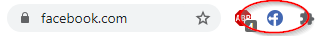
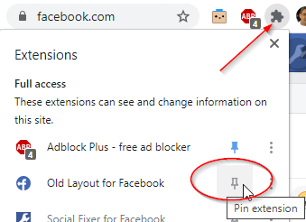

Thanks for Installing Old Layout for Facebook!
You should now see the Old Layout icon in your browser toolbar. Click it to get to Options and more information.

If you don't see the icon, it might be collapsed. Click the puzzle piece to see all your extensions and "pin" it so it shows up.

Like our Page to get news and support
Old Layout Is Not Perfect!!!
This extension works by telling Facebook that you are actually using an old browser, which its new redesign doesn't support.
BUT... there are some side-effects of that. Some features may not work perfectly, some might not be available at all (i.e. Video Chat), and there may be some visual quirks.
Unfortunately, I can't do much about those things. Facebook thinks you are using an old browser, so it disables some things that won't work in old browsers. That's just a trade-off.